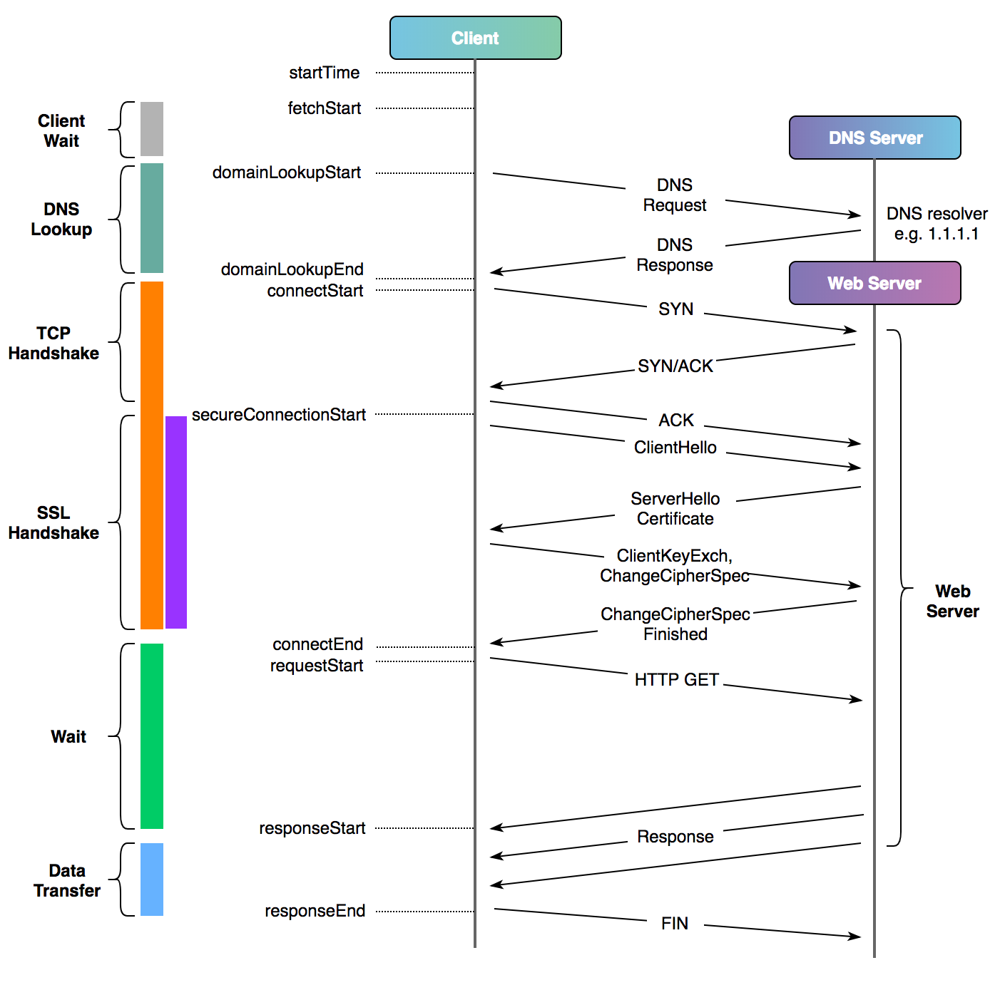

Practical Web Development
Web App Optimization
Decrease Payload
-
Bundle Size
-
Consider bundle size when adding new dependencies
- https://bundlephobia.com
- Visual Studio Code - Import Cost plugin
- Minification
- Brotli compression (or Gzip)
- Compile your bundle just for the browsers you need to support
-
Code takes advantage of tree shaking
- Use import { find, throttle } from "lodash" and not _ = require("lodash")
-
Consider bundle size when adding new dependencies
Reduce sizes of pages by up to 80%
-
Media Size
- Check for extra-large downloads
- Prefer JPG to PNG
- Convert JPG and PNG to WebP
- Reduce sizes by up to 30%
- Prefer SVG
- Avoid GIF (prefer video - WebM or MP4)
- Reduce quality, especially for background images
-
WOFF2 format for fonts
- Reduce sizes by up to 30%
Lazy Loading
Code Splitting/Chunks
- Lazy Loading - Reduce initial page load time, initial page weight, and system resource usage
- Webpack allows to split the code into various bundles which can then be loaded on demand or in parallel
Offscreen images & Iframes
- Native loading attribute


Offscreen images & Iframes
- Intersection observer

if ("IntersectionObserver" in window) {
}
if ("IntersectionObserver" in window) {
const lazyImageObserver = new IntersectionObserver(onIntersection);
function onIntersection(entries, observer) {
}
const lazyImages = [].slice.call(document.querySelectorAll("img.lazy"));
lazyImages.forEach(function(lazyImage) {
lazyImageObserver.observe(lazyImage);
});
}
if ("IntersectionObserver" in window) {
const lazyImageObserver = new IntersectionObserver(onIntersection);
function onIntersection(entries, observer) {
entries.forEach(function(entry) {
if (entry.isIntersecting) {
}
});
}
const lazyImages = [].slice.call(document.querySelectorAll("img.lazy"));
lazyImages.forEach(function(lazyImage) {
lazyImageObserver.observe(lazyImage);
});
}
if ("IntersectionObserver" in window) {
const lazyImageObserver = new IntersectionObserver(onIntersection);
function onIntersection(entries, observer) {
entries.forEach(function(entry) {
if (entry.isIntersecting) {
const lazyImage = entry.target;
lazyImage.src = lazyImage.dataset.src;
lazyImage.srcset = lazyImage.dataset.srcset;
lazyImage.classList.remove("lazy");
lazyImageObserver.unobserve(lazyImage);
}
});
}
const lazyImages = [].slice.call(document.querySelectorAll("img.lazy"));
lazyImages.forEach(function(lazyImage) {
lazyImageObserver.observe(lazyImage);
});
}
Offscreen images & Iframes
CSS Critical Path
Critical CSS In Action
- Extract minimum set of CSS required to render the above-the-fold content
- Inline it in the web page
- Load asynchronously non-critical CSS (it will not block the web page.)
< !doctype html>
< head>
< /head>
< body>
/* ...body goes here */
< /body>
< /html>
Packges
- Node.js module - critical
- Webpack plugin - HTML Critical Webpack Plugin
- Grunt task - grunt-critical
Network
HTTP/2
Binary protocol
Multiplexed requests
HPACK - Header Compression
Server Push


Multiplexed Demo - HTTP1 vs HTTP2
Server Push Demo

HTTP Connection
Chrome Connection Measurements
DNS Prefetching or Preconnect
Defer/Async
< html >
< head >
Title
< /head >
< body >
...
< /body >
< /html >

Defer/Async
< html >
< head >
Title
< /head >
< body >
...
< /body >
< /html >

Async

CDN - Content delivery network
Server Side Rendering
Angular website - Without SSR
React website - With SSR